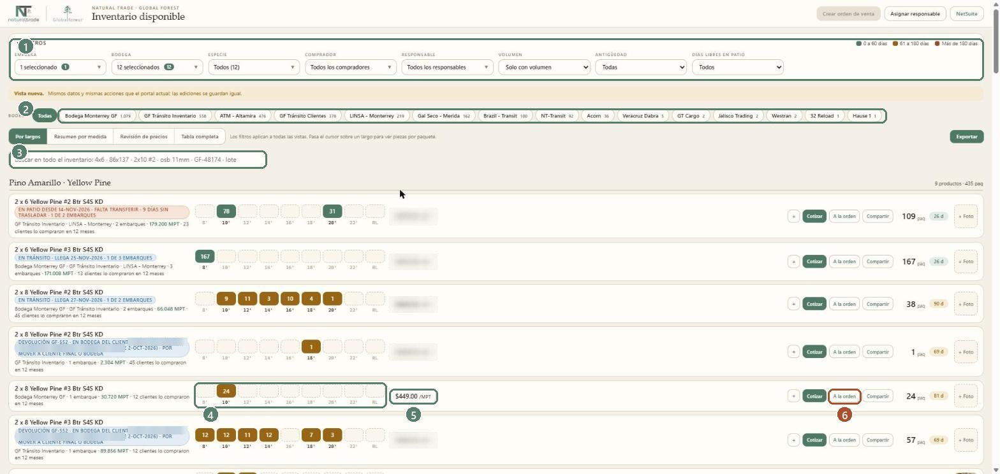
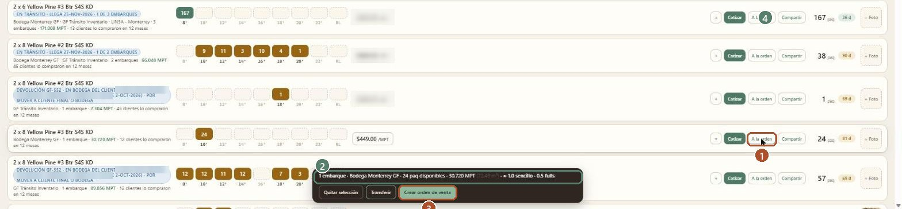
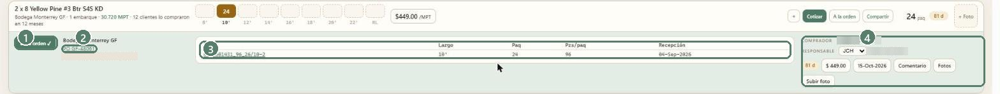
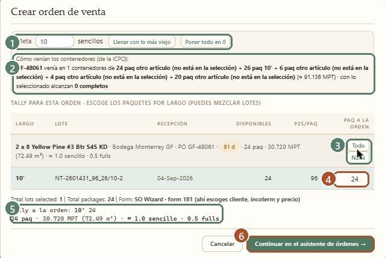
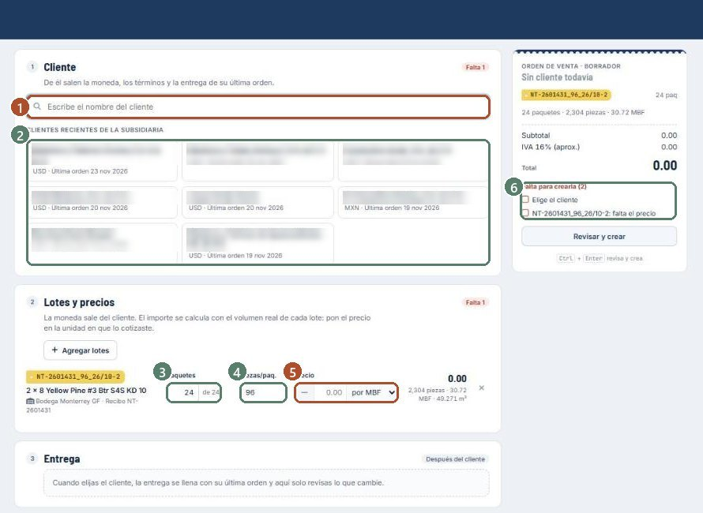
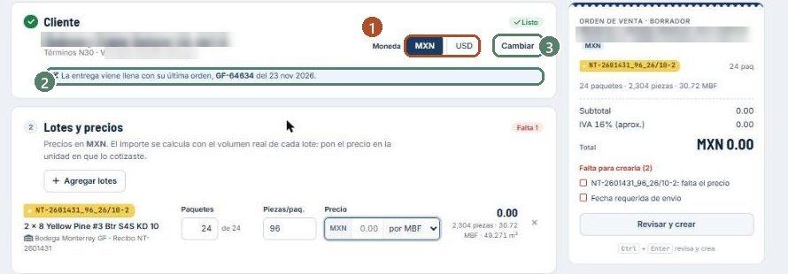
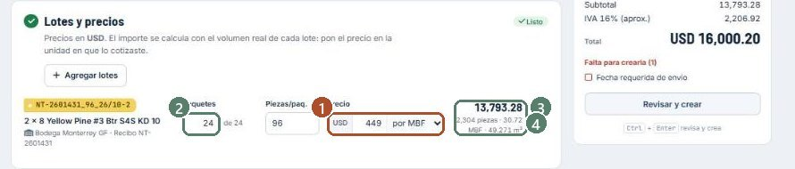
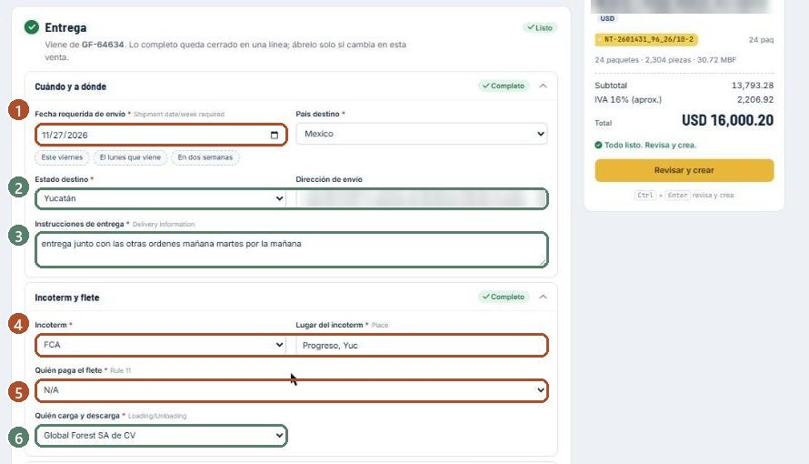
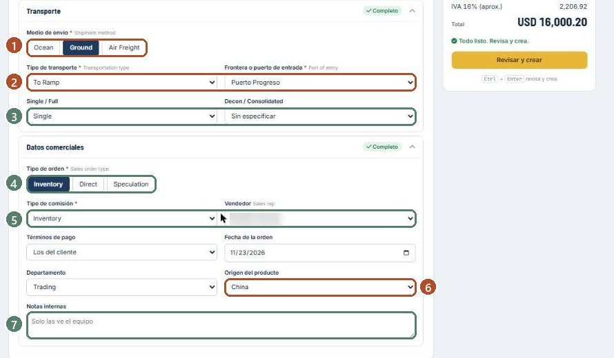
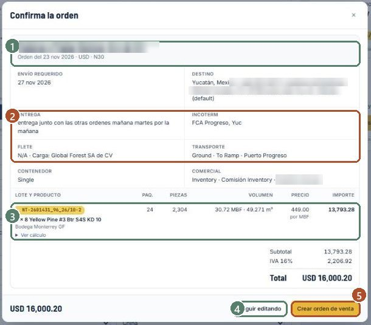

Guías de la NT App
Guías de la NT App
Cómo crear una orden de venta desde el Inventario
Del portal «Inventario disponible» al asistente de órdenes de NetSuite, pantalla por pantalla. Las pantallas son reales. Los números sobre cada imagen te dicen qué puedes cambiar y qué tienes que revisar antes de crear la orden.
Antes de empezar
- Ten a la mano lo que cotizaste y acordaste con el cliente: producto, largos, paquetes, precio y en qué moneda y unidad (por MPT/MBF, por m³ o por pieza), incoterm, lugar y fecha de envío.
- Una orden = una sola empresa (Natural Trade o Global Forest) y una sola bodega. Si el material está en dos bodegas, son dos órdenes.
- Solo se vende lo disponible. Lo que está en GF Tránsito Clientes ya es de otro cliente: no se vende. Si una venta se cancela, Logística lo pasa primero a GF Tránsito Inventario.
- El asistente copia la entrega de la última orden del cliente. Eso ahorra tiempo, pero es la causa número uno de errores: en el paso 8 la revisas campo por campo.
Encuentra el material
Abre NetSuite → portal Inventario disponible. Cada renglón es un producto; los cuadros son los largos con sus paquetes.

| Qué es | Tipo | Qué cuidar | |
|---|---|---|---|
| 1 | Filtros: empresa, bodega, especie, comprador, responsable, volumen, antigüedad | Editable | Si no ves algo, primero revisa que el filtro de Empresa y Bodega lo incluya. |
| 2 | Bodegas con su número de paquetes | Editable | Toca una para ver solo esa bodega. GF Tránsito Clientes no se vende. |
| 3 | Buscador | Editable | Acepta medida (2x8 #3, 86x137), PO (GF-48061) o lote. |
| 4 | Largos y paquetes disponibles (8′ a 22′, RL) | Solo lectura | Pasa el cursor por un largo para ver piezas por paquete. El color dice la antigüedad (verde 0–60 d, café 61–180 d, rojo +180 d). |
| 5 | Precio de lista y su unidad (/MPT) | Referencia | Es el precio sugerido. El precio real lo escribes en el paso 7. |
| 6 | Botón «A la orden» | Revisa | Es el que agrega el material a la orden de venta. No lo confundas con «+», que es para cotizar varios productos (hace un PDF, no una orden). |
Agrégalo a la orden
Toca «A la orden» en cada producto que vas a vender. Abajo aparece una barra oscura con lo que llevas.

| Qué es | Tipo | Qué cuidar | |
|---|---|---|---|
| 1 | «A la orden» del producto | Editable | Vuelve a tocarlo para quitarlo. Puedes agregar varios productos de la misma bodega. |
| 2 | Resumen: embarques, bodega, paquetes, volumen y camiones (sencillo/full) | Solo lectura | Úsalo para saber si llenas el camión que cotizaste. |
| 3 | Crear orden de venta | Revisa | Abre el paso 4. Si en la barra dice «solo para transferir», es material de GF Tránsito Clientes: no se puede vender. |
| 4 | Contador arriba «(1 selected)» y el mismo botón | Solo lectura | Es el mismo botón que el de la barra. |
Revisa de qué embarque sale
Toca el nombre del producto para abrir el detalle. Ahí ves cada lote, su PO y su fecha de recepción.

| Qué es | Tipo | Qué cuidar | |
|---|---|---|---|
| 1 | «En la orden ✓» | Estado | Confirma que este embarque ya va en tu orden. |
| 2 | Bodega y PO de compra | Solo lectura | La bodega aquí es la que va a salir en la orden. Comprueba que sea la que le dijiste al cliente. |
| 3 | Lote, largo, paquetes, piezas por paquete, recepción | Solo lectura | Si las piezas por paquete no coinciden con lo que vio el cliente, avisa antes de vender. |
| 4 | Comprador, responsable, precio, fecha, comentario y fotos | Consulta | Lee el Comentario: a veces dice si el material está apartado o tiene algún detalle. |
Escoge cuántos paquetes de cada largo
La ventana Crear orden de venta arranca en 0. Tú escribes los paquetes por largo: este es el tally que se va a vender.

| Qué es | Tipo | Qué cuidar | |
|---|---|---|---|
| 1 | Meta en sencillos + «Llenar con lo más viejo» / «Poner todo en 0» | Editable | Si vendes «un camión», pon la meta y deja que llene con el material más antiguo primero. |
| 2 | Cómo venían los contenedores (de la ICPO) | Solo lectura | Te dice si estás partiendo un contenedor. Úsalo para no dejar sobrantes sueltos. |
| 3 | «Todo» / «Nada» por producto | Editable | «Todo» pone todo lo disponible del producto. |
| 4 | Paq a la orden por largo | Editable | Escribe exactamente los paquetes acordados. No puede pasar de «Disponibles». |
| 5 | Tally a la orden: paquetes, volumen y camiones | Solo lectura | Compáralo con tu cotización antes de seguir. |
| 6 | «Continuar en el asistente de órdenes →» | Revisa | Abre una pestaña nueva. Si el navegador la bloquea, permite ventanas emergentes de NetSuite. |
Elige al cliente
El asistente llega con tus lotes ya cargados. A la derecha está el borrador con lo que falta para crear la orden.

| Qué es | Tipo | Qué cuidar | |
|---|---|---|---|
| 1 | Buscar cliente | Editable | Escribe el nombre y verifica la razón social completa. Hay razones sociales muy parecidas. |
| 2 | Clientes recientes de la empresa | Atajo | Solo es un atajo. Que salga aquí no quiere decir que sea tu cliente. |
| 3 | Paquetes «de 24» | Editable | Viene con lo que pusiste en el paso 4. Aquí todavía lo puedes bajar. |
| 4 | Piezas por paquete | Editable | Viene del lote. No lo cambies salvo que Logística confirme que el físico es distinto: cambia el volumen y el importe. |
| 5 | Precio y unidad | Editable | Se llena en el paso 7, después de elegir al cliente y la moneda. |
| 6 | «Falta para crearla» | Solo lectura | Lista viva de lo que falta. No puedes crear hasta que diga «Todo listo». |
Revisa la moneda
Al elegir al cliente, el asistente pone su moneda, términos y vendedor, y copia la entrega de su última orden.

| Qué es | Tipo | Qué cuidar | |
|---|---|---|---|
| 1 | Moneda MXN / USD | Revisa | Tiene que ser la moneda en la que cotizaste. En la prueba, la tarjeta del cliente decía «USD · Última orden», pero el asistente marcó MXN. Cámbiala antes de poner el precio. |
| 2 | «La entrega viene llena con su última orden, GF-64634» | Aviso | Te dice de qué orden se copió la entrega. La revisas en el paso 8. |
| 3 | Cambiar cliente | Editable | Si te equivocaste de cliente, cámbialo aquí. No sigas con el equivocado. |
Escribe el precio en la unidad en que lo cotizaste
El importe se calcula con el volumen real del lote: precio × volumen.

| Qué es | Tipo | Qué cuidar | |
|---|---|---|---|
| 1 | Precio + unidad (por MBF, por m³, por pieza) | Editable | Si cotizaste por pieza, escoge «por pieza» y escribe el precio por pieza. Un precio por MPT con la unidad «por pieza» multiplica el importe por cientos. MBF = MPT (miles de pies tabla). |
| 2 | Paquetes | Editable | Lo mismo que en el paso 4. |
| 3 | Importe del renglón | Solo lectura | Haz la cuenta rápida: ¿se parece a tu cotización? |
| 4 | Piezas, MBF y m³ del lote | Solo lectura | Es el volumen real con el que se factura. |
Revisa la entrega y el incoterm, campo por campo
Todo viene copiado de la última orden del cliente, no de esta venta. Abre cada bloque y confírmalo.

| Campo | Tipo | Qué cuidar | |
|---|---|---|---|
| 1 | Fecha requerida de envío * | Editable | Siempre viene vacía. Usa los atajos (Este viernes, El lunes que viene, En dos semanas) o escribe la que prometiste. |
| 2 | Estado destino * y Dirección de envío | Revisa | La dirección es la «default» del cliente. Si esta carga va a otra planta, cámbiala. |
| 3 | Instrucciones de entrega * | Revisa | Aquí venía «entrega junto con las otras ordenes mañana martes por la mañana», el texto de otra venta. Bórralo y escribe el de esta orden. Logística lo lee tal cual. |
| 4 | Incoterm * y Lugar del incoterm * | Revisa | Venía FCA · Progreso, Yuc y este material sale de Monterrey. Pon el incoterm y la ciudad que cotizaste (por ejemplo FCA Monterrey o DAP + ciudad del cliente). |
| 5 | Quién paga el flete * | Revisa | Tiene que cuadrar con el incoterm: si vendiste entregado (DAP), el flete lo pagamos nosotros. |
| 6 | Quién carga y descarga * | Revisa | Confírmalo con lo acordado. |
Transporte y datos comerciales
Los dos últimos bloques también vienen de la orden anterior.

| Campo | Tipo | Qué cuidar | |
|---|---|---|---|
| 1 | Medio de envío * (Ocean / Ground / Air Freight) | Revisa | Desde una bodega en México casi siempre es Ground (camión). |
| 2 | Tipo de transporte * y Frontera o puerto de entrada * | Revisa | Venía «To Ramp · Puerto Progreso». Para material que ya está en bodega, el puerto de la venta anterior no aplica: corrígelo o pregunta a Logística qué va. |
| 3 | Single / Full y Decon / Consolidated | Editable | Pon el camión que cotizaste (sencillo o full). |
| 4 | Tipo de orden * (Inventory / Direct / Speculation) | Revisa | Si vendes material del inventario, aquí viene Inventory. No lo cambies sin preguntar: de esto depende la comisión. |
| 5 | Tipo de comisión * y Vendedor | Revisa | El vendedor viene del cliente. Si la venta es tuya y sale otro nombre, avisa a tu líder; no lo cambies por tu cuenta. |
| 6 | Origen del producto | Revisa | Venía «China» en una venta de Yellow Pine (pino amarillo del sur de EE. UU.). Tiene que ser el origen del material de esta orden. |
| 7 | Términos de pago, fecha, departamento y notas internas | Editable | Los términos vienen del cliente («Los del cliente»). Las notas internas solo las ve el equipo. |
Revisa el resumen y crea la orden
Cuando el panel diga «Todo listo», toca Revisar y crear. Se abre «Confirma la orden» y todavía no se crea nada.

| Qué revisar | Tipo | Qué cuidar | |
|---|---|---|---|
| 1 | Cliente, fecha, moneda y términos | Revisa | Una última vez: cliente correcto y moneda correcta. |
| 2 | Envío, destino, entrega, incoterm, flete, transporte, contenedor y comercial | Revisa | Léelo como si fueras Logística: ¿con esto sabrías qué camión mandar, a dónde y cuándo? |
| 3 | Lote, paquetes, piezas, volumen, precio e importe; «Ver cálculo» | Revisa | «Ver cálculo» muestra cómo salió el importe. Total = subtotal + IVA 16 %. |
| 4 | Seguir editando | Seguro | Regresa al formulario sin crear nada. |
| 5 | Crear orden de venta | Definitivo | Crea la orden en NetSuite y aparta el material. Tócalo una sola vez y espera. |
Entrega copiada
Incoterm, lugar, puerto e instrucciones de otra venta. Revisa el paso 8 completo, aunque todo diga «Completo».
Moneda equivocada
Precio en dólares capturado en una orden en pesos, o al revés. Cambia la moneda antes del precio (paso 6).
Unidad equivocada
Precio por MPT con la unidad «por pieza» o «por m³». El importe se dispara o se desploma (paso 7).
Cliente parecido
Razones sociales casi iguales. Lee el nombre completo y los términos (paso 5).
Material ajeno
GF Tránsito Clientes ya es de otro cliente. Si una venta se cancela, primero va la transferencia a GF Tránsito Inventario.
Orden duplicada
Tocar «Crear» dos veces o crear una nueva para «corregir». Una orden, un toque; los errores se corrigen sobre la misma orden.